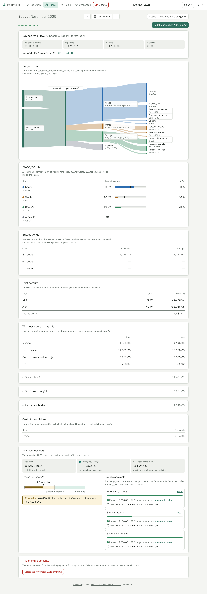
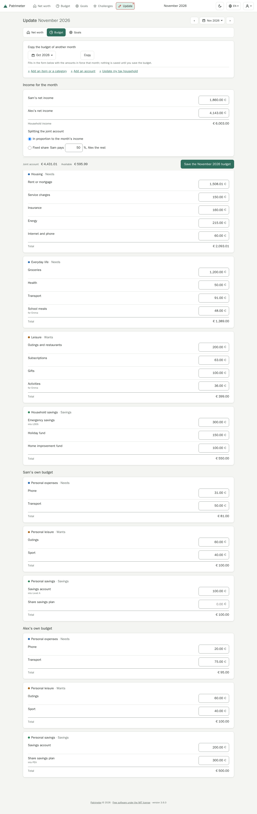
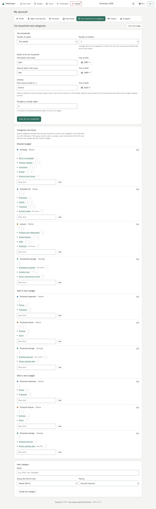
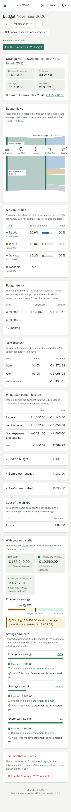

Household budget¶
Budget menu: the household's monthly budget. Each adult's income first pays the shared budget (housing, everyday life, leisure and household savings), paid into the joint account. Each person then pays their own expenses and savings from what they have left. The budget is read alongside the net worth of the same month and compared with the 50/30/20 rule: 50% of income for needs, 30% for wants, 20% for savings.

A single Patrimeter account manages the whole household: you enter everyone's income and expenses, your partner does not need to sign in.
Creating the budget¶
On the first visit, Patrimeter asks for:
- Number of adults (one or two) and Number of children (none to 12), in two lists: the form then only shows the rows of these people;
- for each adult and each child, their first name and their year of birth, picked from a calendar of years. A budget item can be assigned to a child: the budget then shows what each one costs. A child of working age (16 in the year) can have incomes of their own;
- Emergency savings target, in months of household expenses (often 3 to 6; 0: no target).
Create the budget suggests categories and their items, to rename, add to or delete:
| Category | Group | Suggested items |
|---|---|---|
| Housing | needs | rent or mortgage, service charges, insurance, energy, internet and phone |
| Everyday life | needs | groceries, health, transport |
| Leisure | wants | outings and restaurants, subscriptions, gifts |
| Household savings | savings | emergency savings, holiday fund, home improvement fund |
| Personal expenses (each adult) | needs | phone, transport |
| Personal leisure (each adult) | wants | outings, sport |
| Personal savings (each adult) | savings | savings account, share savings plan |
Entering the month's amounts¶
Edit the … budget, or the Budget part of the Monthly update menu, opens the month's budget entry:
- Income for the month: each adult's net income, and that of each child who is 16 or more in the year (a summer job, an apprenticeship…), added to the household's income;
- Splitting the joint account (couple): in proportion to the month's income, or fixed share (for example, the first adult pays 27.5%, the second the rest);
- the amount of each item, category by category: shared budget, then each adult's own budget. An empty field counts as 0.
Category totals, the payment into the joint account and what the household has left are worked out as you type; Enter moves to the next item. Amounts are read in the language of the page, as in the monthly update.

The amounts saved for a month apply to the following months until you change them: a month without an entry takes the budget of an earlier month, marked carried over. To change the budget from a given month (pay rise, new loan…), edit the budget of that month. Delete the … amounts restores those of an earlier month.
At the top of the entry, Copy the budget of another month fills the form with the amounts in force in the chosen month picked from the calendar: check them, then save; nothing is saved before. The same box leads to adding an item or a category (tax household and categories) and an account, and Update my tax household opens the tax household (adults, children, emergency savings target) in My account. Next month's budget can be prepared in advance.
As long as the tax household does not exist, the Budget part of the monthly update says so (No budget yet) with a single button, Create my tax household, which leads to the creation of the budget.
Reading the budget¶
- Summary: savings rate (planned savings as a share of income), possible rate (adding what is left available), household income, expenses (needs and wants), savings and what is left available (or the overspend if the budget exceeds income); net worth for the month, with a link to the Net worth page.
- Budget flows: from each adult's income to the household budget, then to needs, wants, savings and available, with their share of income and their target, then to the categories. The width of a flow is proportional to its amount. On a phone, the chart scrolls horizontally.
- 50/30/20 rule: each group's share of income, and the line of its target.
- Joint account: each adult's payment. In proportion to income, the first adult's share is rounded to the nearest cent; the second pays the rest, so the two payments always add up to the total.
- What each person has left: income, minus the payment into the joint account, minus their own expenses and savings.
- Shared budget and each adult's own budget: the detail of categories and items, to expand (the ▸ arrow before the title turns when the detail is open).
- Cost of the children: the total of the items assigned to each child; the section only appears once an item is assigned to a child of the household.
Example: a couple earns €1,860 and €4,143; the shared budget is €4,554.74, split with a fixed share of 27.5%.
| First adult | Second adult | |
|---|---|---|
| Income | €1,860.00 | €4,143.00 |
| Joint account (27.5% / 72.5%) | − €1,252.55 | − €3,302.19 |
| Own expenses and savings | − €592.30 | − €836.00 |
| Left | €15.15 | €4.81 |
Budget trends¶
Under the 50/30/20 rule, Budget trends gives the average per month of the planned spending (needs and wants) and savings over 3, 6 and 12 months up to the month shown, and below it the same average over the period before: do you spend more than before, save less? One row per period, Expenses and Savings columns. A period going back before the first budget entered stays empty.
With your net worth¶
A month's budget is compared with the net worth of the same month:
- Key figures: net worth for the month (and its change since the previous month), emergency savings (in months of expenses), expenses of the month (needs and wants, savings excluded);
- Emergency savings: the pyramid level, compared with the household's monthly expenses, on a gauge in months of expenses (the same as in the recommendations of the Net worth page): zones below one month, below the target and up to twice the target, a line for the target, and a finding (Alert, Warning with the missing amount, Good, or Note above twice the target);
- Savings payments: a savings item linked to its account (savings account, share savings plan…) shows two bars, its planned payment and the change in the account's balance over the month (this month's statement minus the previous month's), then a finding: payment reached, less than planned (with the gap), balance down, or month's statement to enter. This change also includes interest, gains and withdrawals: it is a benchmark;
- Net worth for the month, also at the top of the budget.
Actual spending with Carbure¶
Linked to your Carbure instance, the budget compares every month the planned amount of each category with the actual spending of your bank accounts.
Tax household and categories¶
The Tax household and categories page, a tab of My account, also opened by the Set up tax household and categories button at the top of the Budget page, organises the budget:
- Tax household: the same lists of the number of adults and of children, then each one with their year of birth. Lowering the number of children removes the last ones of the list; clearing a child's first name removes them from the household, and their items are no longer assigned to them. A child keeps their items when their first name changes. A household created before version 2.26 asks for the missing years at its next save. Emergency savings target. A second adult who joins the household receives the suggested categories; an adult can only leave the household once their own categories have been deleted or moved to the shared budget;
- Categories: name, group of the 50/30/20 rule (needs, wants, savings) and who pays it (the joint account, or an adult from what they have left);
- Items: Add under a category; an item's name opens its page: category, optional child and, for a savings item, the account receiving the payment.
The ↑ and ↓ arrows change the order: a category among those of the same budget (shared or one adult's), an item within its category. The budget and its entry follow this order.
Deleting a category deletes its items; deleting an item removes its amount from every month.

On a phone¶

Privacy¶
The budget is encrypted with your key, like your accounts: first names, names of categories and items, income and amounts. It is part of the export of your data.